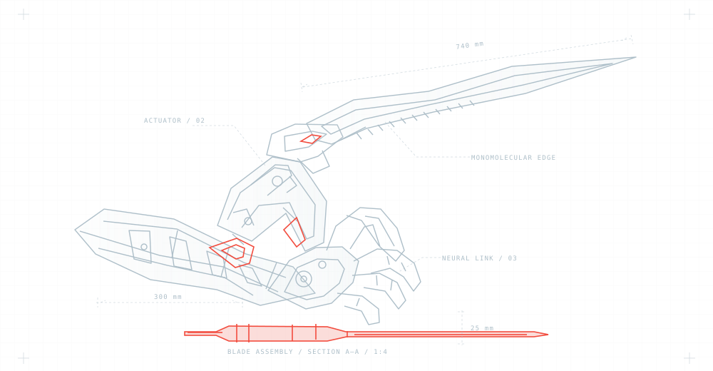

ARASAKA/CORPORATE NETWORK
SYSTEM SECURE
arasaka
CORPORATION
SECURITY LOGIN
0000.00.00 / THU
CURR_NETWORK: ACN002077
NL_PORT_STATUS: OPEN/AWAITING AUTH
ARASAKA / ENGINEERING DIVISION
MANTIS BLADES
CYBERWARE SCHEMATIC — MODEL 001
TECHNICAL FILE04

arasakaアラサカ社
PRESS H TO SHOW CONTROLS